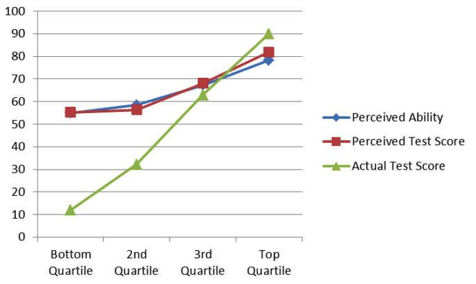

9 In the Classroom
The previous chapter described how to practice lesson delivery and described one method—live coding—that allows teachers to adapt to their learners’ pace and interests. This chapter describes other practices that are also useful in programming classes.
Before describing them, it’s worth pausing for a moment to set expectations. The best teaching method we know is individual tutoring: (Bloom 1984) found that students taught one-to-one did two standard deviations better than those who learned through conventional lecture, i.e. that individually tutored students outperformed 98% of students who were lectured to. However, while mentoring and apprenticeship were the most common ways to pass on knowledge throughout most of history, the industrialization of formal education has made it the exception today. Despite the hype around artificial intelligence, it isn’t going to square this circle any time soon, so every method described below is essentially an attempt to approach the effectiveness of individual tutoring at scale.
9.1 Enforce the Code of Conduct
The most important thing I’ve learned about teaching in the last 30 years is how important it is for everyone to treat everyone else with respect, both in and out of class. If you use this material in any way, please adopt a Code of Conduct like the one in Appendix B and require everyone who takes part in your classes to abide by it. It can’t stop people from being offensive, any more than laws against theft stop people from stealing, but it can make expectations and consequences clear, and signal that you are trying to make your class welcoming to all.
But a Code of Conduct is only useful if it is enforced. If you believe that someone has violated yours, you may warn them, ask them to apologize, and/or expel them, depending on the severity of the violation and whether or not you believe it was intentional. Whatever you do:
- Do it in front of witnesses.
- Most people will tone down their language and hostility in front of an audience, and having someone else present ensures that later discussion doesn’t degenerate into conflicting claims about who said what.
- If you expel someone, say so to the rest of the class and explain why.
- This helps prevent rumors from spreading and shows that your Code of Conduct actually means something.
- Email the offender as soon as you can
- to summarize what happened and the steps you took, and copy the message to your workshop’s hosts or one of your fellow teachers so that there’s a contemporaneous record of the conversation. If the offender replies, don’t engage in a long debate: it’s never productive.
What happens outside of class matters at least as much as what happens within it (Partanen 2011), so you need to provide a way for learners to report problems that you aren’t there to see yourself. One step is to ask someone who isn’t part of your group to be the first point of contact; that way, if someone wants to make a complaint about you or one of your fellow teachers, they have some assurance of confidentiality and independent action. (Aurora and Gardiner 2019) has lots of other advice and is both short and practical.
9.2 Peer Instruction
No matter how good a teacher is, they can only say one thing at a time. How then can they clear up many different misconceptions in a reasonable time? The best solution developed so far is a technique called peer instruction. Originally created by Eric Mazur at Harvard (Mazur 1996), it has been studied extensively in a wide variety of contexts, including programming Porter et al. (2013), and (Porter et al. 2016) found that learners value peer instruction even at first contact.
Peer instruction attempts to provide one-to-one instruction in a scalable way by interleaving formative assessment with learner discussion:
Give a brief introduction to the topic.
Give learners a multiple choice question that probes for their misconceptions (rather than testing simple factual knowledge).
Have all the learners vote on their answers to the MCQ.
If the learners all have the right answer, move on.
If they all have the same wrong answer, address that specific misconception.
If they have a mix of right and wrong answers, give them several minutes to argue with each other in groups of 2–4, then vote again.
As this video shows, group discussion significantly improves learners’ understanding because it uncovers gaps in their reasoning and forces them to clarify their thinking. Re-polling the class then lets the teacher know if they can move on or if further explanation is necessary. A final round of additional explanation after the correct answer is presented gives learners one more chance to solidify their understanding.
But could this be a false positive? Are results improving because of increased understanding during discussion or simply from a follow-the-leader effect (“vote like Jane, she’s always right”)? (Smith et al. 2009) tested this by following the first question with a second one that learners answered individually. They found that peer discussion actually does enhance understanding, even when none of the learners in a discussion group originally knew the correct answer. As long as there is a diversity of opinion within the group, their misconceptions cancel out.
It is important to have learners vote publicly so that they can’t change their minds afterward and rationalize it by making excuses to themselves like “I just misread the question.” Much of the value of peer instruction comes from the hypercorrection of getting the wrong answer and having to think through the reasons why (Section 5.1).
9.3 Teach Together
Co-teaching describes any situation in which two teachers work together in the same classroom. (Friend and Cook 2016) describes several ways to do this:
- Team teaching:
- Both teachers deliver a single stream of content in tandem, taking turns like musicians taking solos.
- Teach and assist:
- Teacher A teaches while Teacher B moves around the classroom to help struggling learners.
- Alternative teaching:
- Teacher A provides a small set of learners with more intensive or specialized instruction while Teacher B delivers a general lesson to the main group.
- Teach and observe:
- Teacher A teaches while Teacher B observes the learners, collecting data on their understanding to help plan future lessons.
- Parallel teaching:
- The class is divided in two and the teachers present the same material simultaneously to each.
- Station teaching:
- The learners are divided into small groups that rotate from one station or activity to the next while teachers supervise where needed.
All of these models create more opportunities for unintended knowledge transfer than teaching alone. Team teaching is particularly beneficial in day-long workshops: it gives each teacher’s voice a chance to rest and reduces the risk that they will be so tired by the end of the day that they will start snapping at their learners or fumbling at their keyboard.
Many people who aren’t comfortable teaching are willing and able to provide in-class technical support. They can help learners with setup and installation, answer technical questions during exercises, monitor the room to spot people who may need help, or keep an eye on the shared notes (Section 9.7), and either answer questions or remind the teacher to do so during breaks.
Helpers are sometimes people training to become teachers (i.e. they’re Teacher B in the teach and assist model), but they can also be members of the host institution’s technical support staff, alumni of the class, or advanced learners who already know the material well. Using the latter as helpers is doubly effective: not only are they more likely to understand the problems their peers are having, it also stops them from getting bored. This helps the whole class stay engaged because boredom is infectious: if a handful of people start checking out, the people around them will follow suit.
If you and a partner are co-teaching:
Take 2–3 minutes before the start of each class to confirm who’s teaching what. If you have time, try drawing or reviewing a concept map together.
Use that time to work out a couple of hand signals as well. “You’re going too fast,” “speak up,” “that learner needs help,” and, “It’s time for a bathroom break” are all useful.
Each person should teach for at least 10–15 minutes at a stretch, since learners will be distracted by more frequent switch-ups.
The person who isn’t teaching shouldn’t interrupt, offer corrections or elaborations, or do anything else to distract from what the person teaching is doing or saying. The one exception is to ask leading questions if the learners seem lethargic or unsure of themselves.
Each person should take a couple of minutes before they start teaching to see what their partner is going to teach after they’re done, and then not present any of that material.
The person who isn’t teaching should stay engaged with the class, not catch up on their email. Monitoring the shared notes (Section 9.7), keeping an eye on the learners to see who’s struggling, jotting down some feedback to give your teaching partner at the next break—anything that contributes to the lesson is better than anything that doesn’t.
Most importantly, take a few minutes when the class is over to congratulate or commiserate with each other: in teaching as in life, shared misery is lessened and shared joy increased.
9.4 Assess Prior Knowledge
The more you know about your learners before you start teaching, the more you will be able to help them. Inside a formal school system, the prerequisites to your course will tell you something about what they’re likely to already know. In a free-range setting, though, your learners may be much more diverse, so you may want to give them a short survey or questionnaire in advance of your class to find out what knowledge and skills they have.
Asking people to rate themselves on a scale from 1 to 5 is pointless because the less people know about a subject, the less accurately they can estimate their knowledge (Figure 9.1, from https://theness.com/neurologicablog/index.php/misunderstanding-dunning-kruger/), a phenomenon called the Dunning-Kruger effect (Kruger and Dunning 1999). Conversely, people who are members of underrepresented groups will often underrate their skills.

Rather than asking people to self-assess, you can ask them how easily they could complete some specific tasks. Doing this is risky, though, because school trains people to treat anything that looks like an exam as something they have to pass rather than as a chance to shape instruction. If someone answers “I don’t know” to even a couple of questions on your pre-assessment, they might conclude that your class is too advanced for them. You could therefore scare off many of the people you most want to help.
Section F.5 presents a short pre-assessment questionnaire that most potential learners are unlikely to find intimidating. If you use it or anything like it, try to follow up with people who don’t respond to find out why not and compare your evaluation of learners with their self-assessment to improve your questions.
9.5 Plan for Mixed Abilities
If your learners have widely varying levels of prior knowledge, you can easily wind up in a situation where a third of your class is lost and a third is bored. That’s unsatisfying for everyone, but there are some strategies you can use to manage the situation:
Before running a workshop, communicate its level clearly to everyone by showing a few examples of exercises that they will be asked to complete. This helps potential participants gauge the level of the class far more effectively than a point-form list of topics.
Provide extra self-paced exercises so that more advanced learners don’t finish early and get bored.
Keep an eye out for learners who are falling behind and intervene early so that they don’t become frustrated and give up.
Ask more advanced learners to help people next to them (see Section 9.6 below).
One other way to accommodate mixed abilities is to have everyone work through material on their own at their own pace as they would in an online course, but to do it simultaneously and side by side with helpers roaming the room to get people unstuck. Some people will go three or four times further than others when workshops are run like this, but everyone will have had a rewarding and challenging day.
A false beginner is someone who has studied a language before but is learning it again. They may be indistinguishable from absolute beginners on pre-assessment tests, but they are able to move much more quickly once the class starts because they are re-learning rather than learning for the first time.
Being a false beginner is often a sign of preparatory privilege (Margolis et al. 2010), and false beginners are common in free-range programming classes. For example, a child whose family is affluent enough to have sent them to a robotics summer camp may do poorly on a pre-test of programming knowledge because the material isn’t fresh in their mind, but still has an advantage over a child from a less fortunate background. The strategies described above can help level the playing field in cases like this, but again, the real solution is to use your own privilege to address larger out-of-class factors (Partanen 2011).
The most important thing is to accept that you can’t help everyone all of the time. If you slow down to accommodate two people who are struggling, you are failing the other eighteen. Equally, if you spend a few minutes talking about an advanced topic to a learner who is bored, the rest of the class will feel left out.
9.6 Pair Programming
Pair programming is a software development practice in which two programmers work together on one computer. One person (the driver) does the typing while the other (the navigator) offers comments and suggestions, and the two switch roles several times per hour.
Pair programming is an effective practice in professional work (Hannay et al. 2009) and is also a good way to teach: benefits include increased success rate in introductory courses, better software, and higher learner confidence in their solutions. There is also evidence that learners from underrepresented groups benefit even more than others Celepkolu and Boyer (2018). Partners can help each other out during practical exercises, clarify each other’s misconceptions when the solution is presented, and discuss common interests during breaks. I have found it particularly helpful with mixed-ability classes, since pairs are more homogeneous than individuals.
When you use pairing, put everyone in pairs, not just learners who are struggling, so that no one feels singled out. It’s also useful to have people sit in new places (and hence pair with different partners) on a regular basis, and to have people switch roles within each pair three or four times per hour so that the stronger personality in each pair doesn’t dominate the session.
If your learners are new to pair programming, take a few minutes to demonstrate what it actually looks like so that they understand that the person who doesn’t have their hands on the keyboard isn’t supposed to just sit and watch. Finally, tell them that people who focus on trying to complete the task as quickly as possible are less fair in their sharing (Lewis and Shah 2015).
Teachers have mixed opinions on whether people should be required to change partners at regular intervals. On the one hand it gives everyone a chance to gain new insights and make new friends. On the other, moving computers and power adapters to new desks several times a day is disruptive, and pairing can be uncomfortable for introverts. That said, (Hannay et al. 2010) found weak correlation between the “Big Five” personality traits and performance in pair programming, although an earlier study (Walle and Hannay 2009) found that pairs whose members had differing levels of personality traits communicated more often.
9.7 Take Notes (Together)
Note-taking is a form of real-time elaboration (Section 5.1): it forces you to organize and reflect on material as it’s coming in, which in turn increases the likelihood that you will transfer it to long-term memory. Many studies have shown that taking notes while learning improves retention Bohay et al. (2011). While it has not yet been widely studied Yang and Lin (2015), I have found that having learners take notes together in a shared online page is also effective:
It allows people to compare what they think they’re hearing with what other people are hearing, which helps them fill in gaps and correct misconceptions right away.
It gives the more advanced learners in the class something useful to do. Rather than getting bored and checking Instagram during class, they can take the lead in recording what’s being said, which keeps them engaged and allows less advanced learners to focus more of their attention on new material.
The notes the learners take are usually more helpful to them than those the teacher would prepare in advance, since the learners are more likely to write down what they actually found new rather than what the teacher predicted would be new.
Glancing at recent notes while learners are working on an exercise helps the teacher discover that the class missed or misunderstood something.
(Mueller and Oppenheimer 2014) reported that taking notes on a computer is generally less effective than taking notes using pen and paper. While their result was widely shared, (Morehead et al. 2019) was unable to replicate it.
If learners are taking notes together, you can also have them paste in short snippets of code and point-form or sentence-length answers to formative assessment questions. To prevent everyone from trying to edit the same couple of lines at the same time, make a list of everyone’s name and paste it into the document whenever you want each person to answer a question.
Learners often find that taking notes together is distracting the first time they try it because they have to split their attention between what the teacher is saying and what their peers are writing (Section 4.1). If you are only working with a particular group once, you should therefore heed the advice in Section 9.12 and have them take notes individually.
One way to demonstrate to learners that they are learning with you, not just from you, is to allow them to take notes by editing (a copy of) your lesson. Instead of posting PDFs for them to download, create editable copies of your slides, notes, and exercises in a wiki, a Google Doc, or anything else that allows you to review and comment on changes. Giving people credit for fixing mistakes, clarifying explanations, adding new examples, and writing new exercises doesn’t reduce your workload, but increases engagement and the lesson’s lifetime (Section 6.3).
9.8 Sticky Notes
Sticky notes are one of my favorite teaching tools, and I’m not alone in loving their versatility, portability, stickability, foldability, and subtle yet alluring aroma (Ward 2015).
As Status Flags
Give each learner two sticky notes of different colors, such as orange and green. These can be held up for voting, but their real use is as status flags. If someone has completed an exercise and wants it checked, they put the green sticky note on their laptop; if they run into a problem and need help, they put up the orange one. This works much better than having people raise their hands: it’s more discreet (which means they’re more likely to actually do it), they can keep working while their flag is raised rather than trying to type one-handed, and the teacher can quickly see from the front of the room what state the class is in. Status flags are particularly helpful when people in mixed-ability classes are working through material at their own speed (Section 9.5).
Once your learners are comfortable with two stickies, give them a third that they can put up when their brains are full or they need a bathroom break1. Again, adults are more likely to post a sticky than to raise their hand, and once one blue sticky note goes up, a flurry of others usually follows.
To Distribute Attention
Sticky notes can also be used to ensure the teacher’s attention is fairly distributed. Have each learner write their name on a sticky note and put it on their laptop. Each time the teacher calls on them or answers one of their questions, they take their sticky note down. Once all the sticky notes are down, everyone puts theirs up again.
This technique makes it easy for the teacher to see who they haven’t spoken with recently, which in turn helps them avoid unconscious bias and interacting preferentially with their most extroverted learners. Without a check like this, it’s all too easy to create a feedback loop in which extroverts get more attention, which leads to them doing better, which in turn leads to them getting more attention, while quieter, less confident, or marginalized learners are left behind Jussim and Harber (2005).
It also shows learners that attention is being distributed fairly so that when they are called on, they won’t feel like they’re being picked on. When I am working with a new group, I allow people to take down their own sticky notes during the first hour or two of class if they would rather not be called on. If they keep doing this as time goes on, I try to have a quiet conversation with them to find out why and to see if there’s anything I can do to make them more comfortable.
As Minute Cards
You can also use sticky notes as minute cards. Before each break, learners take a minute to write one thing on the green sticky note that they think will be useful and one thing on the orange note that they found too fast, too slow, confusing, or irrelevant. While they are enjoying their coffee or lunch, review their notes and look for patterns. It takes less than five minutes to see what learners in a 40-person class are enjoying, what they are confused by, what problems they’re having, and what questions you have not yet answered.
Learners should not sign their minute cards: they are meant as anonymous feedback. The one-up/one-down technique described in Section 9.11 is a chance for collective, attributable feedback.
9.9 Never a Blank Page
Programming workshops and other kinds of classes can be built around a set of independent exercises, develop a single extended example in stages, or use a mixed strategy. The two main advantages of independent exercises are that people who fall behind can easily re-synchronize and that lesson developers can add, remove, and rearrange material at will (Section 6.3). A single extended example, on the other hand, will show learners how the bits and pieces they’re learning fit together: in educational parlance, it provides more opportunity for them to integrate their knowledge.
Whichever approach you take, novices should never start doing exercises with a blank page or screen, since they often find this intimidating or bewildering. If they have been following along as you do live coding, ask them to add a few more lines or to modify the example you have built up. Alternatively, if they are taking notes together, paste a few lines of starter code into the document for them to extend or modify.
Modifying existing code instead of writing new code from scratch doesn’t just give learners structure: it is also closer to what they will do in real life. Keep in mind, though, that learners may be distracted by trying to understand all of the starter code rather than doing their own work. Java’s public static void main() or a handful of import statements at the top of a Python program may make sense to you, but is extraneous load to them (Chapter 4).
9.10 Setting Up Your Learners
Free-range learners often want bring their own computers and to leave the class with those machines set up to do real work. Free-range teachers should therefore prepare to teach on both Windows and MacOS2, even though it would be simpler to require learners to use just one.
If your participants are using different operating systems, try to avoid using features which are specific to just one and point out any that you do use. For example, the “minimize window” controls and behavior on Windows are different from those on MacOS.
No matter how many platforms you have to deal with, put detailed setup instructions on your course website and email learners a couple of days before the workshop starts to remind them to do the setup. A few people will still show up without the required software because they ran into problems, couldn’t find time to complete all the steps, or are simply the sort of person who never follows instructions in advance. To detect this, have everyone run some simple command as soon as they arrive and show the teachers the result, then get helpers and other learners to assist people who have run into trouble.
Some people use tools like Docker to put virtual machines on learners’ computers so that everyone is working with exactly the same tools, but this introduces a new set of problems. Older or smaller machines simply aren’t fast enough to run them, learners struggle to switch back and forth between two different sets of keyboard shortcuts for things like copying and pasting, and even competent practitioners will become confused about what exactly is happening where.
Setting up is so complicated that many teachers prefer to have learners use browser-based tools instead. However, this makes the class dependent on institutional WiFi (which can be of highly variable quality) and doesn’t satisfy learners’ desire to leave with their own machines ready for real-world use. As cloud-based tools like Glitch and RStudio Cloud become more robust, though, the latter consideration is becoming less important.
One last way to tackle setup issues is to split the class over several days, and to have people install what’s required for each day before leaving class on the day before. Dividing the work into chunks makes each one less intimidating, learners are more likely to actually do it, and it ensures that you can start on time for every lesson except the first.
9.11 Other Teaching Practices
None of the smaller practices described below are essential, but all will improve lesson delivery. As with chess and marriage, success in teaching is often a matter of slow, steady progress.
Start With Introductions
Begin your class by introducing yourself. If you’re an expert, tell them a bit about how you got to where you are; if you’re only two steps ahead of them, emphasize what you and they have in common. Whatever you say, your goals are to make yourself more approachable and to encourage their belief that they can succeed.
Learners should also introduce themselves to each other. In a class of a dozen, they can do this verbally; in a larger class or if they are strangers to one another, I find it’s better to have them each write a line or two about themselves in the shared notes (Section 9.7).
Set Up Your Own Environment
Setting up your environment is just as important as setting up your learners’, but more involved. As well as having network access and all the software you’re going to use, you should also have a glass of water or a cup of tea or coffee. This helps keep your throat lubricated, but its real purpose is to give you an excuse to pause and think for a couple of seconds when someone asks a hard question or when you lose track of what you were going to say next. You will probably also want some whiteboard pens and a few of the other things described in Section F.3.
One way to keep your day-to-day work from getting in the way of your teaching is to create a separate account on your computer for the latter. Use system defaults for everything in this second account, along with a larger font and a blank screen background, and turn off notifications so that your teaching isn’t interrupted by pop-ups.
Avoid Homework in All-Day Formats
Learners who have spent an entire day programming will be tired. If you give them homework to do after hours, they’ll start the next day tired as well, so don’t.
Don’t Touch the Learner’s Keyboard
It’s often tempting to fix things for learners, but even if you narrate every step, it’s likely to demotivate them by emphasizing the gap between their knowledge and yours. Instead, keep your hands off the keyboard and talk your learners through whatever they need to do: it will take longer, but it’s more likely to stick.
Repeat the Question
Whenever someone asks a question in class, repeat it back to them before answering to check that you’ve understood it and to give people who might not have heard it a chance to do so. This is particularly important when presentations are being recorded or broadcast, since your microphone will usually not pick up what other people are saying. Repeating questions back also gives you a chance to redirect the question to something you’re more comfortable answering…
One Up, One Down
An adjunct to minute cards is to ask for summary feedback at the end of each day. Learners alternately give either one positive or one negative point about the day without repeating anything that has already been said. The ban on repeats forces people to say things they otherwise might not: once all the “safe” feedback has been given, participants will start saying what they really think.
Minute cards (Section 9.8) are anonymous; the alternating up-and-down feedback is not. You should use the two together because anonymity allows both honesty and trolling.
Have Learners Make Predictions
Research has shown that people learn more from demonstrations if they are asked to predict what’s going to happen (Miller et al. 2013). Doing this fits naturally into live coding: after adding or changing a few lines of a program, ask the class what is going to happen when it runs. If the example is even moderately complex, prediction can serve as a motivating question for a round of peer instruction.
Setting Up Tables
You may not have any control over the layout of the desks or tables in the room in which you teach, but if you do, we find it’s best to have flat (dinner-style) seating rather than banked (theater-style) seating so that you can reach learners who need help more easily and so that it’s easier for learners to pair with one another (Section 9.5). In-floor power outlets so that you don’t have to run power cords across the floor make life easier as well as safer, but are still uncommon.
Whatever layout you have, try to make sure that every seat has an unobstructed view of the screen. Good back support is important too, since people are going to be in them for an extended period. Like in-floor power outlets, good classroom seating is still unfortunately uncommon.
Cough Drops
If you talk all day to a room full of people, your throat gets raw because you are irritating the epithelial cells in your larynx and pharynx. This doesn’t just make you hoarse—it also makes you more vulnerable to infection (which is part of the reason people often come down with colds after teaching).
The best way to protect yourself against this is to keep your throat lined, and the best way to do that is to use cough drops early and often. Good ones will also mask the onset of coffee breath, for which your learners will probably be grateful.
Morning, Noon, and Night
(Smarr and Schirmer 2018) found that learners do less well if their classes and other work are scheduled at times that don’t line up with their natural body clocks, i.e. that if a morning person takes night classes or vice versa, their grades suffer. It’s usually not possible to accommodate this in small groups, but larger ones should try to stagger start times for parallel sessions. This can also help people juggling childcare responsibilities and other constraints, and reduce the length of lineups at coffee breaks and for washrooms.
Humor
Humor should be used sparingly when teaching: most jokes are less funny when written down and become even less funny with each re-reading. Being spontaneously funny while teaching usually works better but can easily go wrong: what’s a joke to your circle of friends may turn out to be a serious political issue to your audience. If you do make jokes when teaching, don’t make them at the expense of any group, or of any individual except possibly yourself.
9.12 Limit Innovation
Each of the techniques presented in this chapter will make your classes better, but you shouldn’t try to adopt them all at once. The reason is that every new practice increases your cognitive load as well as your learners’, since you are all now trying to learn a new way to learn as well as the lesson’s subject matter. If you are working with a group repeatedly, you can introduce one new technique every few lessons; if you only have them for a one-day workshop, it’s best to pick just one method they haven’t seen before and get them comfortable with that.
9.13 Exercises
9.13.1 Create a Questionnaire (individual/20 min)
Using the questionnaire in Section F.5 as a template, create a short questionnaire you could give learners before teaching a class of your own. What do you most want to know about their background, and how can both parties be sure they agree on what level of understanding you’re asking about?
9.13.2 One of Your Own (whole class/15 min)
Think of one teaching practice that hasn’t been described so far. Present your idea to a partner, listen to theirs, and select one to present to the group as a whole. (This exercise is an example of think-pair-share.)
9.13.3 May I Drive? (pairs/10 min)
Swap computers with a partner (preferably one who uses a different operating system than you) and work through a simple programming exercise. How frustrating is it? How much insight does it give you into what novices have to go through all the time?
9.13.4 Pairing (pairs/15 min)
Watch this video of pair programming and then practice doing it with a partner. Remember to switch roles between driver and navigator every few minutes. How long does it take you to fall into a working rhythm?
9.13.5 Compare Notes (small groups/15 min)
Form groups of 3–4 people and compare the notes you have taken on this chapter. What did you think was noteworthy that your peers missed and vice versa? What did you understand differently?
9.13.6 Credibility (individual/15 min)
(Fink 2013) describes three things that make teachers credible in their learners’ eyes:
- Competence
- knowledge of the subject as shown by the ability to explain complex ideas or reference the work of others.
- Trustworthiness
- having the learners’ best interests in mind. This can be shown by giving individualized feedback, offering a rational explanation for grading decisions, and treating all learners the same.
- Dynamism
- excitement about the subject (Chapter 8).
Describe one thing you do when teaching that fits into each category, and then describe one thing you don’t do but should.
9.13.7 Measuring Effectiveness (individual/15 min)
(Kirkpatrick 1994) defines four levels at which to evaluate training:
- Reaction
- how did the learners feel about the training?
- Learning
- how much did they actually learn?
- Behavior
- how much have they changed their behavior as a result?
- Results
- how have those changes in behavior affected their output or the output of their group?
What are you doing at each level to evaluate what and how you teach? What could you do that you’re not doing?